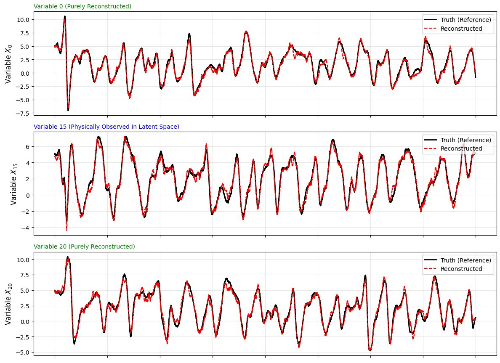

Learning statistically accurate dynamics of complex systems
Built an autoencoder–LSTM model in PyTorch that compresses a chaotic 40-variable system to a 13-dimensional state and forecasts it, then extended it to learn from statistical observations like regional averages and Fourier modes.
Read the case study
The question. Real observations of complex systems are often summaries, like averages or variances, and many states share the same summary. Can a compact learned model be corrected by those statistics and still recover the full physical state?
What we built. A convolutional encoder with circular padding (the system lives on a ring) maps 40 sites to 8 learned coordinates. Five observed values are appended. An LSTM with two layers forecasts in that 13-dimensional space, and the decoder maps forecasts back to all 40 sites. The figure shows reconstruction tracking variables that are never observed directly.
Extensions. We replaced point observations with block averages and Fourier coefficients, tested two ways to couple them to the learned coordinates, and ran forecasts on the FitzHugh–Nagumo spiking model.
The ensemble Kalman filter correction is a proposed design, not a finished result. Team: Daniel Youngberg, Tan Bui, Cody McKenna and me.